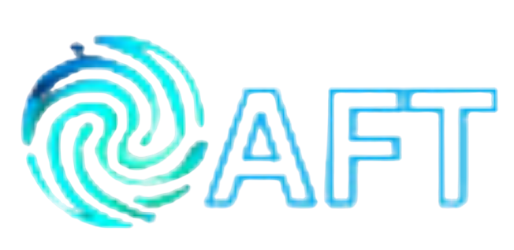

Every AI tool that helps you can also help an attacker. Toggle to see the difference.
Mass emails with poor writing, sent to thousands of addresses, hoping a few will click.
A caller stuck with their own accent and a fixed script that doesn't adapt.
Code written manually — slower to make and easier for security tools to detect.
Flawless, tailored messages generated instantly for each target, using real names and projects.
A cloned voice — including yours or a colleague's — generated on demand for a live call.
AI rewrites malicious code automatically so each copy looks different to detection tools.
A "vendor" message — perfectly written, mentioning your real project — asks you to approve a payment. You call the vendor back on the number you already have on file before doing anything.
The message has no errors, mentions your real project, and sounds just like the vendor. You approve the payment because it seems legitimate.